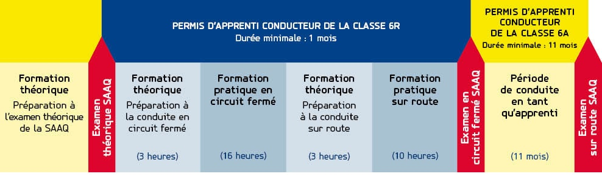

Vous avez plus de 16 ans et voulez obtenir votre permis de conduire moto?
Les formateurs spécialisés du réseau d’écoles de conduite Tecnic vous proposent des cours de conduite moto complets, sécuritaires et entièrement personnalisés. Certifiés depuis plus de 30 ans, nos cours théoriques et pratiques vous donneront tous les moyens pour réussir les examens de la SAAQ. N’attendez plus! Venez passer votre cours de conduite moto chez Tecnic!Les principales étapes du programme moto
Les avantages du cours de conduite moto Tecnic
- Des formateurs expérimentés, patients et certifiés.
- Un programme éprouvé et certifié par la SAAQ depuis plus de 30 ans.
- Des cours entièrement adaptés à votre rythme de formation.
- Des motos récentes de type custom ou sport.
- Des horaires flexibles de jour comme de soir, en semaine et la fin de semaine.
- Des prix concurrentiels et des modalités de paiement flexibles.
Les grandes étapes du permis de conduire moto
- Cours de préparation à l’examen théorique
- Examen théorique à la SAAQ
- Cours de préparation aux cours en circuit fermé
- Cours pratiques en circuit fermé
- Cours de préparation aux cours sur le réseau routier
- Cours pratiques sur le réseau routier
- Examen en circuit fermé à la SAAQ
- Examen final sur le réseau routier (11 mois plus tard)
Nouvelles règles d’accès au permis 6R Moto
Voici les nouvelles règles d’accès au permis 6R Moto en vigueur depuis le 17 décembre 2020 : - Si la personne souhaitant obtenir un permis d’apprenti conducteur de la classe 6R est titulaire d’un permis probatoire ou d’un permis de conduire de l’une des classes 1, 2, 3, 4A, 4B, 4C ou 5, elle ne devrait pas avoir accumulé 4 points d’inaptitude ou plus à son dossier et elle ne devrait pas avoir fait l’objet d’une révocation ou d’une suspension de son permis depuis au moins 2 ans (articles 180, 185 ou 191.2 du Code de la sécurité routière).
- Si la personne souhaitant obtenir un permis d’apprenti conducteur de la classe 6R n’est pas titulaire d’un permis probatoire ou d’un permis de conduire de l’une des classes 1, 2, 3, 4A, 4B, 4C ou 5 (donc, un premier permis de conduire), elle ne devrait pas avoir de point d’inaptitude inscrit à son dossier et elle ne devrait pas avoir fait l’objet d’une révocation ou d’une suspension inscrite à son dossier depuis au moins 2 ans (articles 180, 185 ou 191.2 du Code de la sécurité routière).
Pour plus d’informations, nous vous invitons à communiquer directement avec la SAAQ au 1-800-361-7620.
Étape 1 : Cours de préparation à l’examen théorique chez Tecnic
Les formateurs moto des écoles de conduite Tecnic vous offrent un cours théorique optionnel* d’une durée de 3 heures basé sur le livre de la SAAQ « Conduire une moto ». Grâce à leur expérience et à leurs conseils avisés, ils augmenteront grandement vos chances de réussite lors de l’examen théorique à la SAAQ. *(Ce cours n'étant pas obligatoire, certaines écoles moto ne l'offrent pas.)Matériel pédagogique suggéré pour le cours
- Le manuel « Conduire une moto ». Essentiel pour bien se préparer à l'examen de la SAAQ.
- Le manuel « Maîtriser les règles de la route ». Indispensable pour ceux qui ne possèdent pas leur permis de conduire automobile (classe 5), puisqu'il aborde la signalisation et le Code de la sécurité routière.
- L'apprentissage en ligne, un produit exclusif aux clients Tecnic, inclut aussi une pratique d'examen comprenant 5 questionnaires de 32 questions. Des outils incontournables pour se préparer à l'examen de la SAAQ dans le confort de son foyer!
Étape 2 : Examen théorique à la SAAQ
Étape 2 : Examen théorique à la SAAQ
Après avoir suivi le cours théorique (optionnel) et approfondi vos connaissances, faites une pratique d’examen en ligne. Par la suite, passez l’examen théorique de la SAAQ.Votre objectif : Obtenir le permis d’apprenti conducteur (classe 6R)
En réussissant l’examen théorique, vous obtiendrez votre permis d’apprenti conducteur (classe 6R). Ce permis vous permettra de conduire une motocyclette, mais seulement à l’intérieur des cours pratiques.En cas d’échec, vous devez savoir que la SAAQ impose un délai de 28 jours avant de pouvoir reprendre votre examen… Donc, soyez prêt!
Étape 3 : Cours de préparation aux cours en circuit fermé
Étape 3 : Cours de préparation aux cours en circuit fermé
Suivre un cours théorique obligatoire, d’une durée de 3 heures, sur les rudiments de la conduite moto en circuit fermé.Les formateurs vous apprendront la base d’une conduite sécuritaire, coopérative et responsable.Étape 4 : Cours pratiques en circuit fermé
Étape 4 : Cours pratiques en circuit fermé
Après l’obtention de votre permis d’apprenti conducteur (classe 6R), vous pourrez commencer à suivre les cours pratiques en circuit fermé.Cours pratiques en circuit fermé de Tecnic
Les 16 heures de pratique en circuit fermé chez Tecnic sont réparties en 4 séances de 4 heures. Vous y apprendrez à maîtriser la moto et aussi toutes les manœuvres qui seront évaluées lors de l'examen pratique en circuit fermé de la SAAQ.Contenu de nos cours pratiques en circuit fermé :
- CF1 : Initiation
- CF2 : Prise d’un virage et d’une courbe, freinage en ligne droite et dans une courbe
- CF 3 : Approfondissement du CF2 freinage
- CF4 : Approfondissement et perfectionnement, évaluation formative
Matériel pédagogique pour le cours pratique
Le Guide de l'apprenti conducteur remis par votre école de conduite Tecnic vous permettra de suivre votre cheminement et votre progrès tout au long du cours pratique (en circuit fermé et sur route).Étape 5 : Cours de préparation aux cours sur le réseau routier
Étape 5 : Cours de préparation aux cours sur le réseau routier
Chez Tecnic, le cours de préparation aux cours sur le réseau routier est d’une durée de 3 heures. Ce cours théorique obligatoire vous présentera les rudiments de la conduite moto sur route. Nos formateurs certifiés vous apprendront notamment la base d’une conduite sécuritaire, coopérative et responsable.Étape 6 : Cours pratiques sur le réseau routier
Étape 6 : Cours pratiques sur le réseau routier
Cours pratiques sur le réseau routier
Les 10 heures de pratique sur le réseau routier sont réparties en 5 séances de 2 heures. Vous y apprendrez à partager le réseau routier de façon sécuritaire, coopérative et responsable ainsi que toutes les manœuvres qui seront évaluées lors de l'examen final de la SAAQ sur le réseau routier.Contenu de nos cours pratiques sur le réseau routier :
- Sortie 1 : Quartiers résidentiels.
- Sortie 2 : Quartiers résidentiels et artères principales.
- Sortie 3 : Routes secondaires.
- Sortie 4 : Routes principales ou autoroutes, ou les deux.
- Sortie 5 : Centre-ville, routes principales ou autoroutes, ou les deux.
Étape 7 : Examen en circuit fermé à la SAAQ
Après avoir suivi tous vos cours pratiques chez Tecnic (16 heures en circuit fermé et 10 heures sur route), vous pourrez passer l’examen pratique en circuit fermé de la SAAQ.Objectif : Obtenir le permis d’apprenti conducteur (classe 6A)
En réussissant l’examen pratique en circuit fermé, vous obtiendrez votre permis d’apprenti conducteur, de classe 6A, valide pour une durée maximale de 18 mois.Pour une période minimale de 11 mois, le détenteur n’a plus l’obligation d’être accompagné, mais il doit se soumettre à un couvre-feu lui interdisant de conduire une moto entre minuit et cinq heures. Ce dernier ne peut avoir de passager sur sa moto.
En cas d’échec, vous devez savoir que la SAAQ impose un délai de 14 jours avant de pouvoir reprendre votre examen… Donc, soyez prêt!
EXEMPLE DE L'EXAMEN EN CIRCUIT FERMÉ AU QUÉBEC
Étape 8 : Examen final sur le réseau routier (11 mois plus tard)
Étape 8 : Examen final sur le réseau routier (11 mois plus tard)
Seulement 11 mois après avoir obtenu votre permis d’apprenti conducteur (classe 6A), vous pourrez prendre rendez-vous avec la SAAQ pour passer votre examen final sur le réseau routier.En cas d’échec, vous devez savoir que la SAAQ impose un délai de 56 jours avant de pouvoir reprendre votre examen… Donc, soyez prêt!
Cours de préparation à l’examen final
Pour maximiser vos chances de réussite, les moniteurs moto de Tecnic vous recommandent vivement de suivre le « Cours de préparation à l'examen routier de la SAAQ » :
Cours s'effectuant sur le réseau routier.
Durée de 1 heure à 4 heures sur une seule journée.
Révision complète des manœuvres évaluées.
Simulation parfaite de l’examen final.
Choisissez bien votre cylindrée lors de l’examen
- Faites bien attention! Lors de l’examen sur route, vous devrez utiliser une moto dont la cylindrée correspond à la classe du permis que vous désirez obtenir :
- Permis classe 6A : permet de conduire toutes les motos.
- Permis classe 6B : permet de conduire les motos de 400 cm3 cc ou moins.Permis classe 6C : permet de conduire les motos de 125 cm3 cc ou moins.
Objectif final : Obtenir le permis de conduire moto (classe 6A)
En réussissant l’examen final sur route de la SAAQ, vous obtiendrez votre permis de conduire moto (classe 6A). Il vous permettra enfin de conduire votre moto sur les routes sans devoir être accompagné.Important :
Notez que pour vous faire remettre un permis de conduire moto (classe 6A), vous devrez avoir 25 ans ou plus, ou encore posséder un permis de conduire auto (classe 5). Si ce n’est pas le cas, vous recevrez d’abord un permis probatoire valide pour 24 mois et comportant deux restrictions :
- Ne pas conduire après avoir consommé de l'alcool (zéro alcool).
- Ne pas avoir plus de 4 points d'inaptitude sur votre permis.